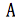
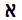
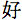
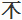
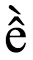
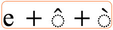
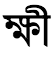
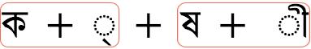

This article introduces a number of basic concepts needed to understand other articles that deal with characters and character encodings.
Unicode is a universal character set, ie. a standard that defines, in one place, all the characters needed for writing the majority of living languages in use on computers. It aims to be, and to a large extent already is, a superset of all other character sets that have been encoded.
Text in a computer or on the Web is composed of characters. Characters represent letters of the alphabet, punctuation, or other symbols.
In the past, different organizations have assembled different sets of characters and created encodings for them – one set may cover just Latin-based Western European languages (excluding EU countries such as Bulgaria or Greece), another may cover a particular Far Eastern language (such as Japanese), others may be one of many sets devised in a rather ad hoc way for representing another language somewhere in the world.
Unfortunately, you can’t guarantee that your application will support all encodings, nor that a given encoding will support all your needs for representing a given language. In addition, it is usually impossible to combine different encodings on the same Web page or in a database, so it is usually very difficult to support multilingual pages using ‘legacy’ approaches to encoding.
The Unicode Consortium provides a large, single character set that aims to include all the characters needed for any writing system in the world, including ancient scripts (such as Cuneiform, Gothic and Egyptian Hieroglyphs). It is now fundamental to the architecture of the Web and operating systems, and is supported by all major web browsers and applications. The Unicode Standard also describes properties and algorithms for working with characters.
This approach makes it much easier to deal with multilingual pages or systems, and provides much better coverage of your needs than most traditional encoding systems.
The following shows Unicode script blocks as of Unicode version 5.2:
The first 65,536 code point positions in the Unicode character set are said to constitute the Basic Multilingual Plane (BMP). The BMP includes most of the more commonly used characters.
The number 65,536 is 2 to the power of 16. In other words, the maximum number of bit permutations you can get in two bytes.
The Unicode character set also contains space for around a million additional code point positions. Characters in this latter range are referred to as supplementary characters.
For more information about Unicode, see the Unicode Home Page, or read the tutorial An Introduction to Writing Systems & Unicode.
It is important to clearly distinguish between the concepts of a character set versus a character encoding.
A character set or repertoire comprises the set of characters one might use for a particular purpose – be it those required to support Western European languages in computers, or those a Chinese child will learn at school in the third grade (nothing to do with computers).
A coded character set is a set of characters for which a unique number has been assigned to each character. Units of a coded character set are known as code points. A code point value represents the position of a character in the coded character set. For example, the code point for the letter á in the Unicode coded character set is 225 in decimal, or 0xE1 in hexadecimal notation. (Note that hexadecimal notation is commonly used for referring to code points, and will be used here.) A Unicode code point can have a value between 0x0000 and 0x10FFFF.
Coded character sets are sometimes called code pages.
The character encoding reflects the way the coded character set is mapped to bytes for manipulation in a computer. The picture below shows how characters and code points in the Tifinagh (Berber) script are mapped to sequences of bytes in memory using the UTF-8 encoding (which we describe in this section). The code point values for each character are listed immediately below the glyph (ie. the visual representation) for that character at the top of the diagram. The arrows show how those are mapped to sequences of bytes, where each byte is represented by a two-digit hexadecimal number. Note how the Tifinagh code points map to three bytes, but the exclamation mark maps to a single byte.
This explanation glosses over some of the detailed nomenclature related to encoding. More detail can be found in Unicode Technical Report #17.
One character set, multiple encodings. Many character encoding standards, such as those in the ISO 8859 series, use a single byte for a given character and the encoding is a straightforward mapping to the scalar position of the characters in the coded character set. For example, the letter A in the ISO 8859-1 coded character set is in the 65th character position (starting from zero), and is encoded for representation in the computer using a byte with the value of 65. For ISO 8859-1 this never changes.
For Unicode, however, things are not so straightforward. Although the code point for the letter á in the Unicode coded character set is always 225 (in decimal), in UTF-8 it is represented in the computer by two bytes. In other words there isn't a trivial, one-to-one mapping between the coded character set value and the encoded value for this character.
In addition, in Unicode there are a number of ways of encoding the same character. For example, the letter á can be represented by two bytes in one encoding and four bytes in another. The encoding forms that can be used with Unicode are called UTF-8, UTF-16, and UTF-32.
UTF-8 uses 1 byte to represent characters in the ASCII set, two bytes for characters in several more alphabetic blocks, and three bytes for the rest of the BMP. Supplementary characters use 4 bytes.
UTF-16 uses 2 bytes for any character in the BMP, and 4 bytes for supplementary characters.
UTF-32 uses 4 bytes for all characters.
In the following chart, the first line of numbers represents the position of a character in the Unicode coded character set. The other lines show the byte values used to represent that character in a particular character encoding.
|  |  |  |  | |
|---|---|---|---|---|
| Code point | U+0041 | U+05D0 | U+597D | U+233B4 |
| UTF-8 | 41 | D7 90 | E5 A5 BD | F0 A3 8E B4 |
| UTF-16 | 00 41 | 05 D0 | 59 7D | D8 4C DF B4 |
| UTF-32 | 00 00 00 41 | 00 00 05 D0 | 00 00 59 7D | 00 02 33 B4 |
For more information about characters and encodings see Introducing Character Sets and Encodings, or read the tutorial Handling character encodings in HTML and CSS and the article Choosing & applying a character encoding.
For XML and HTML (from version 4.0 onwards) the document character set is defined to be the Universal Character Set (UCS) as defined by both ISO/IEC 10646 and Unicode standards. (For simplicity and in line with common practice, we will refer to the UCS here simply as Unicode.)
What this means is that the logical model describing how XML and HTML are processed is described in terms of the set of characters defined by Unicode. (In practical terms, this means that browsers usually convert all text to Unicode internally.)
Note that this does not mean that all HTML and XML documents have to use a Unicode encoding! It does mean, however, that documents can only contain characters defined by Unicode. Any encoding can be used for your document as long as it is properly declared and represents a subset of the Unicode repertoire.
For more information about the document character set see the article Document character set.
Although we have used it without much qualification so far in this article, the term 'character' is used here in an abstract and somewhat vague way to refer to the smallest component of written language that has semantic value. However, the term 'character' is often used to mean different things in different contexts: it can variously refer to the visual, logical, or byte-level representation of a given piece of text. This makes the term too imprecise to use when specifying algorithms, protocols, or document formats, unless you explicitly define what you mean by it. If the term 'character' is used in those contexts in a technical sense, the recommendation is to use it as a synonym for code point (described above).
It is particularly important to remember that bytes only rarely equate to characters in Unicode, as shown in the earlier examples.
However, particularly in complex scripts, what a user perceives as a smallest component of their alphabet (and so what we will call a user-perceived character) may actually be a sequence of code points. For example, the Vietnamese letter ề will be perceived as a single letter even if the underlying code point sequence is U+0065 LATIN SMALL LETTER E + U+0302 COMBINING CIRCUMFLEX ACCENT + U+0300 COMBINING GRAVE ACCENT. Similarly, a Bangla speaker may view ksha (ক্ষ), which is composed of the sequence U+0995 BENGALI LETTER KA + U+09CD BENGALI SIGN VIRAMA + U+09B7 BENGALI LETTER SS,) as a single letter.
It is often important to take into account these user-perceived characters. For example, it is common to treat certain combinations of code points as a single unit for various editing operations, such as line-breaking, cursor movement, selection, deletion, etc. It would usually be problematic if a user selection accidentally omitted part of the letters just mentioned, or if a line-break separated a base character from its following combining characters.
In order to approximate user-perceived character units for such operations, Unicode uses a set of generalised rules to define grapheme clusters – sequences of adjacent code points that can be treated as a unit by applications. A single alphabetic character like e is a grapheme cluster, but so also is any combination of base character and following combining character(s), such as ề mentioned above.
Unicode Standard Annex #29: Text Segmentation actually defines two types of grapheme cluster: extended grapheme clusters, and legacy grapheme clusters. Here when we say 'grapheme cluster' we mean the former. It is not recommended to use the latter.
| user-perceived character |  |
|---|---|
| (possible) decomposition & grapheme cluster boundaries |  |
Currently there are, however, some limitations to the grapheme cluster rules: for example, the rules split the Bangla user-perceived character kshī (ক্ষী) into two adjacent grapheme clusters, rather than enveloping the whole orthographic syllable. Applications that need to work with user-perceived characters in Bangla therefore need to apply some script-specific tailoring of the grapheme cluster rules.
| user-perceived character |  |
|---|---|
| decomposition & grapheme cluster boundaries |  |
The appropriate units for editing operations sometimes vary according to what you want to do. For example, if you backspace over the Hindi word हूँ (U+0939 DEVANAGARI LETTER HA + U+0942 DEVANAGARI VOWEL SIGN UU + U+0901 DEVANAGARI SIGN CANDRABINDU) the application will typically first delete each of the two combining characters, and then the base. However, if you 'forward-delete' while the cursor is at the left of the word most applications will delete the whole grapheme cluster in one go.
CSS, in order to refer to an indivisible text unit in a given context, uses the term typographic character unit. The definition of what constitutes a typographic character unit depends on the operation that is being applied. So when working with the example of ề above, when deleting forwards there would be a single typographic character unit, but three when backspacing. Also, typographic character units cover the cases such as Bengali ksha, which grapheme clusters currently don't. The determination of what constitutes a typographic character unit in a given language and editing context is deferred to the application, rather than spelled out in rules.
A font is a collection of glyphs. In a simple scenario, a glyph is the visual representation of a code point. The glyph used to represent a code point will vary with the font used, and whether the font is bold, italic, etc. In the case of emoji, the glyphs used will vary by platform.
In fact, more than one glyph may be used to represent a single code point, and multiple code points may be represented by a single glyph.
Emoji provide another example of the complex relationship between code points and glyphs.
| U+1F46A FAMILY | |
| U+1F468 U+200D U+1F469 U+200D U+1F466 | |
| U+1F468 U+200D U+1F469 U+200D U+1F467 U+200D U+1F466 |
The emoji character for "family" has a code point in Unicode: 👪 [U+1F46A FAMILY]. It can also be formed by using a sequence of code points: 👨👩👦 [U+1F468 U+200D U+1F469 U+200D U+1F466]. Altering or adding other emoji characters can alter the composition of the family. For example the sequence 👨👩👧👧 [U+1F468 U+200D U+1F469 U+200D U+1F467 U+200D U+1F466] results in a composed emoji glyph for a "family: man, woman, girl, boy" on systems that support this kind of composition. Many common emoji can only be formed using sequences of code points, but should be treated as a single user-perceived character when displaying or processing the text.
A character escape is a way of representing a character without actually using the character itself.
For example, there is no way of directly representing the Hebrew character א in your document if you are using an ISO 8859-1 encoding (which covers Western European languages). One way to indicate that you want to include that character in HTML is to use the escape א. Because the document character set is Unicode, the user agent should recognize that this represents a Hebrew aleph character.
Examples of escapes in HTML / XHTML and CSS, and advice on when and how to use them, can be found in the article Using character escapes in markup and CSS.
When you retrieve a document from a server, the server normally sends some additional information with the document. This is called the HTTP header. Here is an example of the kind of information about the document that is passed by HTTP header with a document as it travels from the server to the client.
The second line from the bottom in this example carries information about the character encoding for the document.
HTTP/1.1 200 OK
Date: Wed, 05 Nov 2003 10:46:04 GMT
Server: Apache/1.3.28 (Unix) PHP/4.2.3
Content-Location: CSS2-REC.en.html
Vary: negotiate,accept-language,accept-charset
TCN: choice
P3P: policyref=http://www.w3.org/2001/05/P3P/p3p.xml
Cache-Control: max-age=21600
Expires: Wed, 05 Nov 2003 16:46:04 GMT
Last-Modified: Tue, 12 May 1998 22:18:49 GMT
ETag: "3558cac9;36f99e2b"
Accept-Ranges: bytes
Content-Length: 10734
Connection: close
Content-Type: text/html; charset=UTF-8
Content-Language: en
If your document is dynamically created using scripting, you may be able to explicitly add this information to the HTTP header. If you are serving static files, the server may associate this information with the files. The method of setting up a server to pass character encoding information in this way will vary from server to server. You should check with the server administrator.
As an example, Apache servers typically provide a default encoding, which can usually be overridden by directory-specific settings. For example, a webmaster might add the following line to a .htaccess file to serve all files with a .html extension as UTF-8 in this and all child directories:
AddType 'text/html; charset=UTF-8' html
For more information on changing the encoding in the HTTP header, see Setting the HTTP charset parameter
Getting started? Introducing Character Sets and Encodings
Serving HTML & XHTML for information about MIME types, standards vs quirks modes, and DOCTYPEs.
Authoring HTML & CSS
Setting up a server